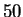
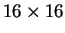
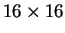

Next: Application of the STRFPAK
Up: Examples of Auditory and
Previous: Example of Auditory System
Contents
The vision example data are from experiments done by Gallant Lab at
University of California, Berkeley.
The stimuli class is a natural vision movie which simulates natural
viewing of a static natural scene. It was constructed by extracting
image patches along a simulated eye scan path.
The stimulus ensemble consists of a natural vision movie  second
long and is displayed with frequency of  Hz.
The spatial plane has been downsampled by  pixels in order to
facilitate display.
Hz.
The spatial plane has been downsampled by  pixels in order to
facilitate display.
2003-03-19